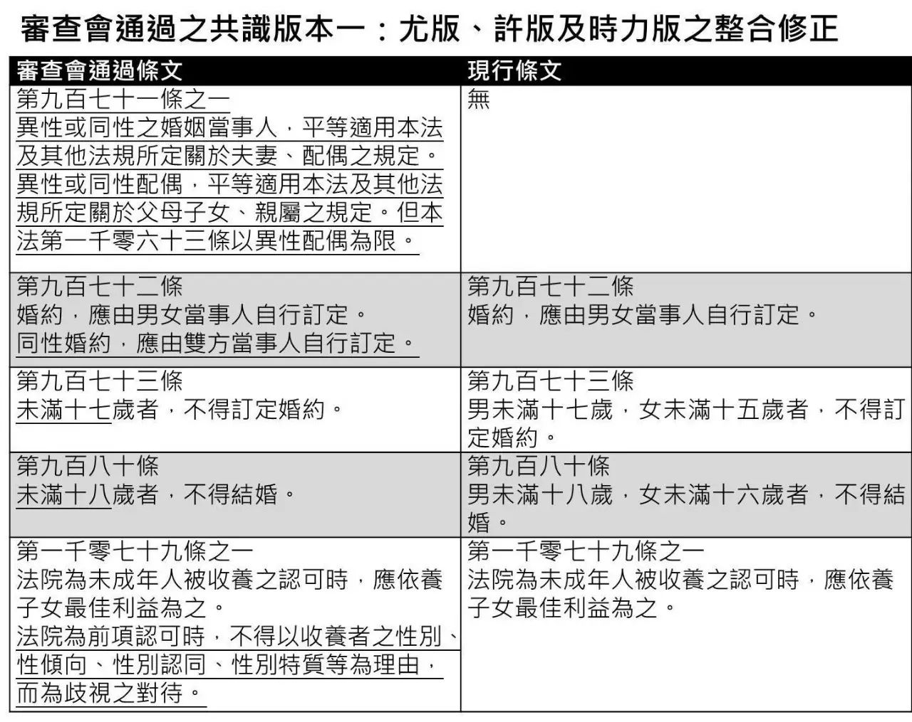

狂欢之后，台湾的同性婚姻合法化怎么走？

相信前段时间大家都被台湾同性婚姻释宪案刷屏了，大法官裁定“禁止同婚”违宪后，修法将交给立法院，要由立法院决定什么时候修法，期限为两年。但关于这其中的一些具体问题，比如法律到底要怎么制定等，大家可能还有所疑惑。正好瓜瓜前段时间收到了小伙伴Anka Wu的投稿，就让他来为大家解答一下这些疑惑吧。

5月24号，台湾地区大法官实现宣布禁止同性结婚违法的民法违宪，鼓舞了不少的支持者，国际媒体竞相报道。而更让人惊讶的是，大法官搬出了“日出条款”（注）要求台湾的“立法院”在2年内制定同婚法律，如逾期未完成，相同性别两人可以向户政机关提出婚姻登记，确立了也保障了台湾成为了亚洲第一个同婚合法化的地区。
| 注：日出条款为法律设定的缓冲期，规定法律要在多长的时间成立；与之相对的是“日落条款”，它为废止法律提供缓冲期，以往台湾地区大法官的判决几乎都采用日落条款。
在支持者的欢欣鼓舞后，台湾的同婚法案到底如何制定？下面是相关整理：
部门之争——到底谁来制定？
制定者之一：立法院
· 台湾地区“立法院”
台湾地区最高立法机构是“立法院”，任何法律草案的通过都需要三读才能成为法律。而在2016年12月26号，台湾同婚草案送进立法院通过一读，送交朝野协商等待二读，当时已经形成了两个版本，第一个版本是民进党尤美女委员为首的“民法派”，第二个版本是民进党蔡易余委员的“专法派”，在下面的文章中将会论述。
制定者之二：行政院
· 台湾地区“行政院”
5月24日，在大法官释宪案之后，台湾“总统府”要求台湾地区“行政院”提出相关草案，而“行政院”是台湾最高行政机关，如果要制定法律也会提交草案送交“立法院”进行审查。目前由“行政院”秘书长陈美玲领先草案，最快明年初送交“立法院”审查。
而民进党段宜康委员就抨击蔡英文“已经打到第九局，又从第一局重新开始？”。他认为既然“立法院”的同婚草案将进行二读，为何行政机关还要重新提草案，这是否是要把现有的草案推倒重来？

派系之争——到底怎么制定？
涉及范围广
如果要成立同婚法律，那将会涉及到台湾地区112种法律，356种条文，这些法律条文涉及“夫妻”、“父母”、“祖父母”等称谓，由于同性伴侣不涉及相关称谓，但需要让同性伴侣纳入相关的法律保障，例如最重要的涉及条文：
财经：
·自用住宅认定以“夫妻”等共同土地为计算基础
·赠与税中“父母”对子女婚嫁，赠与总金额不超过100万元
劳动：
·婚嫁、丧假规定
·遗属年金、劳工死亡新制退休金
·家庭照顾假
·育婴假
医疗：
《人工生殖法》原适用对象为不孕夫妻
内政：
·户籍资料中夫妻称谓栏
·《户籍法》父母称谓
· 支持同婚民众手举标牌
“民法派”与“专法派”该选择哪一个？
这两派是台湾社会对于同婚草案的最大争议，“立法院”通过一读的草案分为两个版本，一个版本是民进党尤美女委员为主“民法派”，即修改少部分民法亲属篇文字，让同性伴侣和异性伴侣享有相同权利，其精神为“一律适用性”（如图：尤美女等版本整合修正版）。但这个版本的反对度最高，许多不支持同婚的人认为它修改了婚姻的定义，是不可接受的。

· 尤美女等版本整合修正版
另一个版本是民进党蔡易余委员为首的“专法派”，在民法里新立同性伴侣法，将同性婚姻涉及的356种法律条文搬出另立专法，其精神为“区别照顾性”，但外界质疑立专法的本质是在修民法还未取得必要条件时的过渡法条，也被同志团体认为是歧视性法律，他们认为，如果修民法可以一步到位，为何要大费周章立专法。而在二读时，“立法院”将逐条审查这两个版本的法案。
· 民进党尤美女委员
但是这个版本“冲击最小，最多人同意”。甚至部分反对同婚的团体都能够对立专法妥协。包括国民党主席洪秀柱和前台湾地区副领导人吴敦义都表示支持。

台湾同婚合法化的思考
台湾社会的主导文化是儒家文化为主体的汉文化，同时深受西方文化影响，成为东西文化的交融之地。而台湾的宗教环境宽松，佛教、道教、基督教的相关团体众多，也形成了台湾多元文化并存的社会环境。放眼望去世界上20个将同志婚姻合法化的国家，同志婚姻合法的道路一般会经过三个阶段：
第一个阶段是社会大多数成员能够接纳同性恋的存在，而这个部分台湾早已解决，认为同性恋是正常人已经成为全民共识。
第二阶段则是讨论同性婚姻是否合法化，而台湾在这个部分呈现的现况是均势的，台湾智库在2016年11月份所做的民调显示有47.8%的民众支持同性婚姻，41.7%的民众不支持，其中女性的接受度高于男性，20-29岁的民众的支持度是71.2%，随着年龄的递增，支持度越低，可以看出台湾赞成同性婚姻的人并没有形成大多数。
而第三个阶段则是怎么让同性婚姻合法化，是修改民法还是另立专法。台湾民意基金会在2016年12月份的调查，56%的民众反对修改民法，37.8%的民众赞成，同时，44%的民众赞成立专法，43.9%的民众反对立专法。
由此可见，台湾同婚法案在2年内的顺利完成还需要各方的努力。
我们不再仅仅抬头仰望触手不及的彩虹，地上的彩虹也搭起来了，我想你们会很幸福吧。
——编者寄
责任编辑 | Anka Wu
版面编辑 | 文文